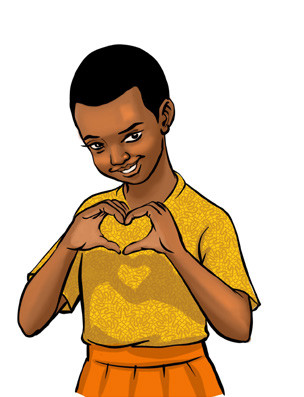
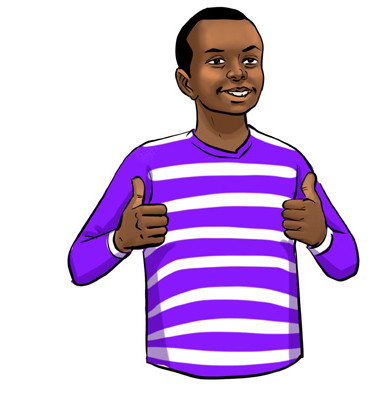
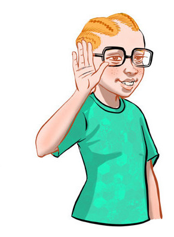
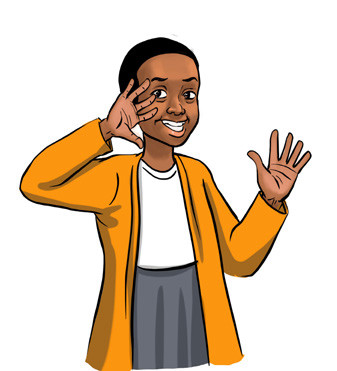
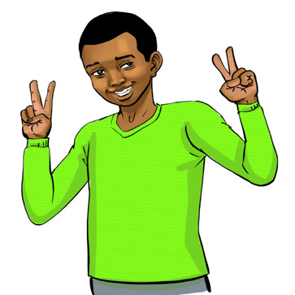
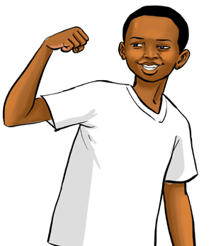

English for Secondary Schools Student’s Book Form One, printed page 129
(c) Express your opinion on the following issues.
- 1. Meals provided by your school to students
- 2. Services provided at your health centre or dispensary
- 3. Corporal punishment in schools
- 4. Bodaboda services
Task symbol: a blue clipboard with a pen and four checked boxes.

Task
Watch/listen to any radio/TV programme on any topic. Write down the topic and your opinion. Share them with other students for further discussion.
Activity 2
Using appropriate non-verbal cues in interpersonal communication
(a) Study the following pictures and tell what each person is expressing.
1

Girl smiling and making a heart shape with her hands to show love or affection.2

Boy smiling and giving two thumbs up to show approval or satisfaction.3

Person cupping a hand to the ear to show listening or asking to hear better.4

Girl cupping her hand near her mouth as if calling out to someone.5
Boy making the OK sign with both hands to show that something is fine or correct.6

Boy smiling and making peace or victory signs with both hands.7
Girl waving with one hand in greeting.8
Girl giving a thumbs-up to show approval or encouragement.9

Boy flexing his arm to show strength or confidence.